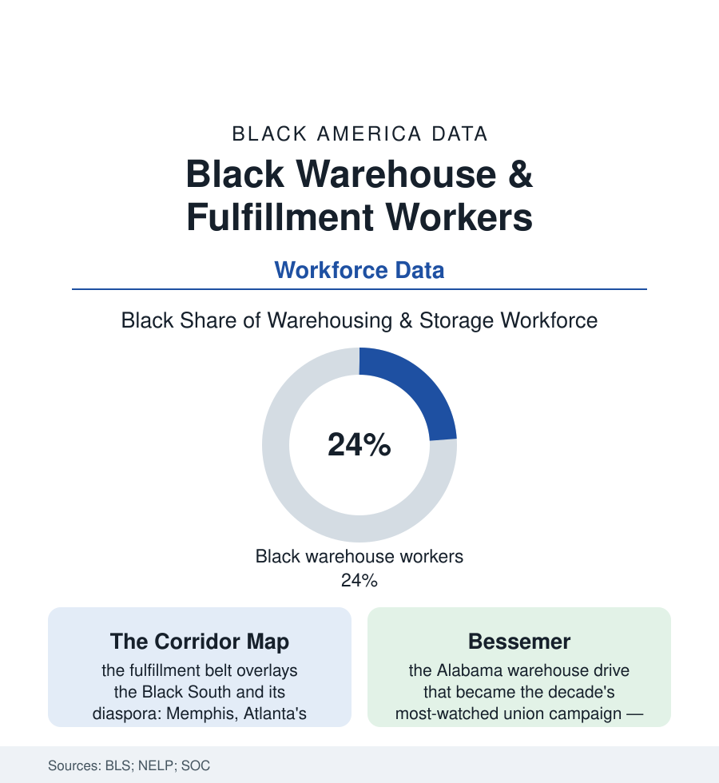

Black Employment
The Warehouse: The New Factory Floor and Who Works It
E-commerce fulfillment is the mass-employment industry of the age — concentrated in Black logistics corridors, paced by algorithm, and fighting the era's defining union battles. The warehouse file.

The factory did not disappear from Black working life; it changed its product from things made to things moved. Warehousing and fulfillment — the industry the BLS counts at well over a million and a half workers and climbing — employs Black workers at roughly a quarter of its workforce, concentrated in the logistics corridors of the Black South and its northern diaspora, at a pace set by software and an injury rate the federal tables place among the highest of any industry its size. This article reads the warehouse file.
The Corridor and the Building
The geography is the first datum: the fulfillment map was drawn by land prices, interstates, and incentive packages, and it landed — as the meatpacking restructuring landed before it — where labor was Black and land was cheap: Memphis (the distribution capital built on the river and the runways), Atlanta's southern arc, the Inland Empire's million-square-foot rows, Louisville's air hub, the I-78 corridor's Pennsylvania fields. Inside the buildings, the work's terms are the modern file's signature: the rate (units per hour, displayed, tracked, and disciplined by the system in the worker accounts and the regulators' citations — the algorithmic pace that the injury data indict, warehousing's musculoskeletal and overall injury rates running at multiples of the private-industry average in the BLS tables), the shift's architecture (the ten-and-twelve-hour nights, the mandatory overtime seasons of the fourth quarter, the temp-to-hire funnels of the industry's first decades slowly direct-hiring under pressure), and the wage position — above the retail and food-service floor the workforce came from, below the union factory's ceiling their grandparents' generation held, the warehouse as the era's honest middle rung: a real paycheck with a real injury profile attached. The demographic rows make the industry a Black workplace by any measure: the workforce shares in the corridor counties running well above the national quarter, the management tiers in the diversity reports thinning as they rise, the buildings' cultures — the music, the churches' shift ministries, the parking-lot networks — a Black working-class world built inside the most automated sheds on earth. The pandemic wrote the workforce's centrality into the public record before the campaigns did: the fulfillment buildings ran through the lockdown spring as essential infrastructure, their parking lots the site of the era's first workplace-outbreak headlines — the country discovering, in a season, whose labor its doorstep life was built on.
The Organizing Decade
The warehouse became the labor movement's main stage precisely because of that workforce, and the campaigns are the employment file's current events: the Bessemer, Alabama drive — a majority-Black fulfillment workforce in the Black Belt voting on a union in the most covered warehouse campaign of the era, its runoff and refiling chapters still being written in the labor board's dockets — the Staten Island warehouse's independent-union victory (a young Black-led union beating the same company the established unions hadn't), the TEAMSTER and RWDSU and worker-center drives across the corridors, and the policy front moving with them (the state warehouse-quota laws — California's and New York's and others' statutes requiring disclosure of the algorithmic quotas and banning discipline-by-unseen-metric, the first laws of the algorithmic-management era, written for this workforce by name). The industry's counter-data run in its automation roadmaps: the robotics programs whose deployment curves the analysts project against the headcount — the packinghouse lesson inverted, the question being whether the organizing arrives before the automation this time, the seniority lists and the contracts racing the robots down the same corridors. The workforce's own verdict is recorded in the turnover rows, the industry's churn among the economy's highest — the warehouse as a job taken and left in millions of individual calculations a year, the organizing files arguing, in effect, that the calculation is the industry's design and can be redesigned.
Reading the Warehouse Data
A quarter of the workforce that moves everything America buys, injured at rates the tables headline, organizing in the buildings the maps can't hide: the warehouse file is the employment section's present tense — the newest mass workplace, built in a decade, already carrying the whole century's questions about pace, bodies, and the price of a paycheck. The BLS counts the workers. The quotas count them faster. The campaigns are the workers' own arithmetic, offered in reply.
More in Black Employment
The Black Unemployment Rate: The Two-to-One Pattern
Black unemployment runs at roughly twice the White rate — 5.5 percent against 3.3 percent in annual averages — a ratio stable across five decades of federal data. How it is measured and why it persists.
Black Median Weekly Earnings: The 80-Cent Ratio
Black full-time workers earn a median of about $900 a week — roughly 80 cents for every dollar White workers earn. The BLS earnings data by group, gender, and occupation.
Black Labor Force Participation: Working at National Rates
Black labor force participation runs at roughly the national rate — and Black women participate at higher rates than White women. The BLS participation data.
Source: U.S. Bureau of Labor Statistics; U.S. Bureau of Labor Statistics injury data (warehousing NAICS 493); National Employment Law Project studies; Strategic Organizing Center reports.